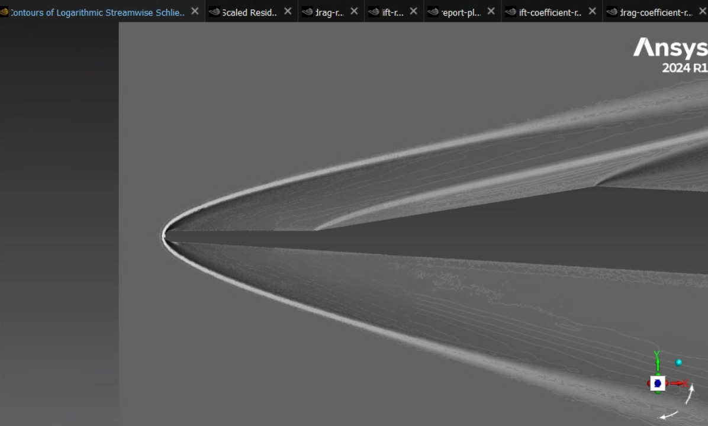
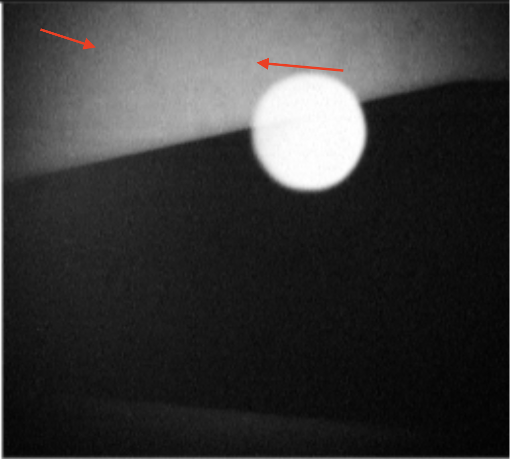
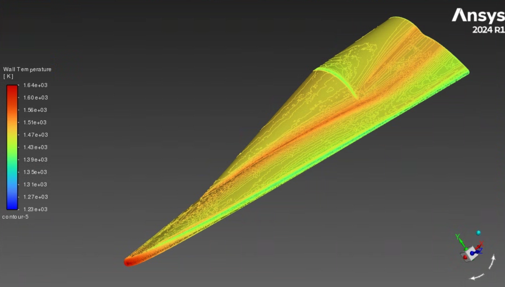
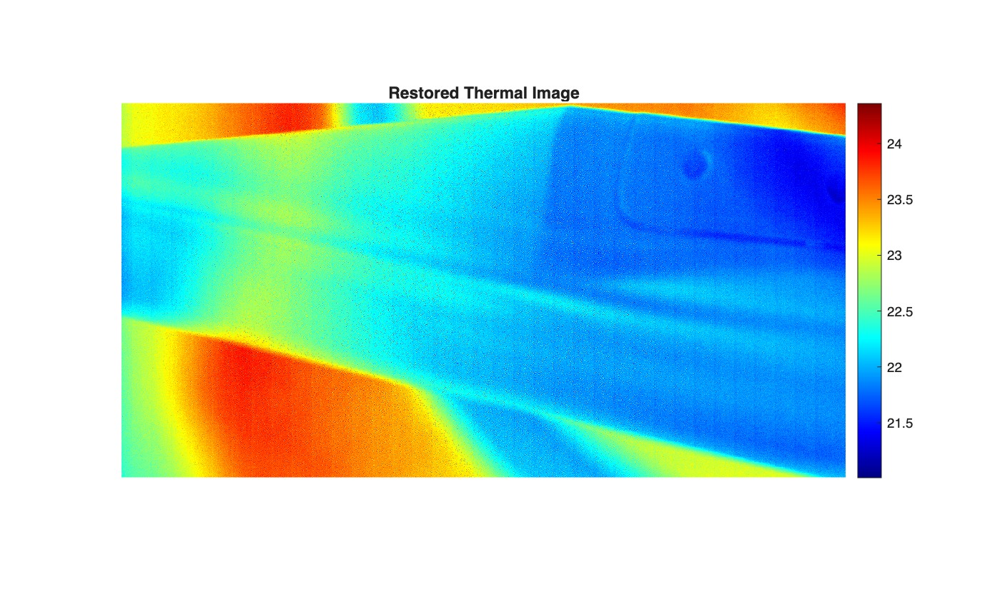

Sebastian Viegas
Aerospace Engineering — CubeSats, Hypersonics & Propulsion
Undergraduate at the University of Notre Dame designing, simulating, and fabricating flight hardware — from modular satellite mechanisms to Mach 6+ waverider projectiles and liquid rocket engine components.
01 — ABOUT
Building things that fly, spin, and go very fast.
I'm a Bachelor of Science candidate in Aerospace Engineering at the University of Notre Dame (Class of 2028), minoring in Engineering Corporate Practice, with a 3.64/4.00 GPA. My work spans four labs and teams: satellite mechanisms, hypersonic aerodynamics, shock-tunnel facility design, and liquid propulsion. The common thread is taking a system from CAD and hand analysis through simulation to a physical, tested part.
02 — PROJECTS
Hardware & Research.
Mechanisms Lead & Subsystem Placement Responsible Engineer
- Leading a student team in end-to-end design, analysis, and fabrication of moving satellite hardware, including reaction wheels, deployable solar panels, and monopole antennas.
- Architected IrishSat's first fully modular CubeSat design and full-system SolidWorks assembly, modeling subsystem components to validate physical fit and system tolerances.
- Designed reaction wheels engineered for satellite modularity; completed torque and dynamic rotational calculations to verify the satellite could rotate on any axis within 7°/s.
- Executed MATLAB thermal simulations of orbital solar radiation on battery housings; constructed a scale 2U physical prototype via laser cutting and 3D printing to validate internal component packaging.
Reaction Wheel Module
About This Hardware
The Reaction Wheel Module provides momentum to actively control the CubeSat's attitude. Three of these modules are positioned across different axes to ensure complete three-dimensional directional control. The assembly features a thin aluminum cage housing a steel spoked flywheel, which is spun to a high RPM by a motor and supported by a bearing. The cage includes three-dimensional attachment points on its corners to facilitate flexible integration into the primary structure.
Full 2U CubeSat Assembly MK7
About This Hardware
The fully assembled 2U CubeSat features a modular aluminum bus frame composed of end caps, walls, rails, and internal support rods. Internal components are vertically stacked rather than attached to the outer walls, optimizing space and accessibility. The vertical stack incorporates deployable Solar Panels, Reaction Wheels, a PCB Stack, a Magnetorquer Module, Monopole Antennas, and a Battery Pack. The CubeSat is designed for the SHAMROCK mission to demonstrate a Switch Beam Lens (SBL) Antenna payload for advanced small satellite communications.
IrishSat 2026 Final Poster
About This Document
This document details the systems engineering and architectural layout of the IrishSat modular platform. Scroll through to review subsystem tolerances, thermal dynamic calculations, and reaction wheel integration testing procedures.
Download Documentation (PDF)Experimental Liquid Propulsion Team Member
- Designed a custom graphite nozzle insert for liquid propulsion Engine Genesis to withstand 3350 K and 400 psi pressure loads within the throat and combustion chamber.
- Built a static test stand for the hybrid Engine Alpha, machining assembly components via waterjet cutting and horizontal bandsaw.
- Performed dynamic FEA simulations in Fusion 360 under 200 lbf thrust load conditions to optimize structural geometry and ensure safety margins.
Engine Alpha Test Stand
About This Hardware
This robust engine test stand is engineered to secure and evaluate rocketry propulsion systems during static fire operations. It is designed to secure the engine and limit recoil when firing solely along the track. The standoffs allow for piping to run into the injector while also providing a plate for the pressure plate that is mounted on the vertical bar on the end. This plate measures the thrust force generated by the engine.
Engine Genesis Graphite Throat Insert
About This Hardware
This pure graphite insert is designed to withstand the extreme heat and pressure within the combustion chamber of the engine without cracking or ablating. It is split in two pieces joined with a tongue-and-groove interface to ease manufacturing. The two outer channels are designed to hold O-ring seals that will prevent gas from leaking around the phenolic liner and down the sides of the insert.
Project Team Lead
- Appointed Team Lead for an upcoming hypersonic flight competition after co-authoring a design report on a high L/D (3+), low-altitude waverider projectile design.
- Developed MATLAB scripts to parametrically iterate projectile geometries and analyzed CFD performance in ANSYS Fluent.
- Fabricated 3D-printed models to experimentally validate shock angles and surface thermal loads in a Mach 6 Ludwieg wind tunnel.
Schlieren Wind Tunnel Validation


About These Images
The image on the left is the calculated logarithmic streamwise Schlieren off the bow of the projectile at the same Mach 5.83 as the wind tunnel in ANSYS Fluent. On the right is our experimental results taken with self-aligned focusing imagery with red arrows to highlight the schlieren lines as they are difficult to see. The results show that the CFD results were correct. [The right image may be cropped improperly, if so click and drag the image slightly to see the shock gradients.]
FLIR Wind Tunnel Validation


About These Images
The image on the left is the wall temperature on the surface of the projectile at Mach 5.83 in ANSYS Fluent. On the right is one image captured by a FLIR X8581 high speed camera and then processed using a MATLAB script I developed to show temperature gradients in color. The results generally showed that the CFD was validated, although there were many discrepancies, as shown in the above images in particular. We could not determine the exact reason for these discrepancies on the upper surface of the model.
2025 Projectile Final Design
About This Hardware
This is the model used to determine the center of mass of the projectile. In this rendering, it is missing winglets, the rear payload, and the rear plate for viewing purposes. Notable features include the thick insulation on the wings to protect the internal components from extreme heat, the multiple metal bulkheads to maintain structural stability, and the flight computer tucked in the front of the projectile.
2025 Final Design Report
About This Document
This is the final design report submitted for consideration to UCAH. It ultimately was not selected to progress in the competition.
Download Design Report (PDF)Research Assistant
- Modeled free-piston shock dynamics and tunnel operational boundaries using Queensland L1d4 and NASA CEA to predict thermochemical expansion through the nozzle at static conditions ranging from 5-10 MPa and 1850-3000 K.
- Performed high-fidelity 2D axisymmetric CFD simulations with over 2 million cells as small as 1e-6 m in ANSYS Fluent to analyze exit conditions and boundary layer behavior across nozzle contours.
- Ran FEA simulations to ensure adequate factor of safety under extreme dynamic loads for both static and dynamic parts.
- Finalized facility CAD assembly in SolidWorks within spatial laboratory constraints; prepared high-pressure components for DFMA, supplier sourcing, and manufacturing quotes.
Full Facility Assembly Summer 2026
About This Hardware
This is the full facility assembly as of the end of summer 2026. I put this together to help visualize the facility in the lab space, although the room model is not included on this page due to confidentiality constraints. Almost everything is modeled here aside from small pieces such as bolts and o-rings. The nozzle in this model is an earlier placeholder without supports; the current conical nozzle design is detailed in the case study below.
CASE STUDY
Hypersonic Nozzle: From Contoured to Conical
Two Generations of Nozzle
The nozzle expands the reflected-shock reservoir gas (about 4700 K and 23 MPa in air) to the test condition. My first design was a contoured nozzle generated with Sivells' method-of-characteristics code (CONTUR, Fortran) with a boundary-layer correction, which I post-processed in MATLAB into SolidWorks-ready wall coordinates. That contour was 3.5 m long with a ⌀24.7 mm throat and was split into two Inconel throat pieces and three flanged steel sections.
For the current revision I moved to a 6° half-angle conical nozzle with a smaller ⌀8.5 mm throat. It reaches an area ratio of 2390 (about Mach 13.7 for an ideal γ = 1.4 gas, roughly Mach 10 with real-gas effects) in 1.94 m, a little over half the length of the contour. A straight cone is also far simpler to build: rolled and welded plate instead of a machined Inconel contour. The figure above compares the two to scale.
Structural Design of the Three-Piece Nozzle
| Piece | Material | Length | Bore |
|---|---|---|---|
| 1 · Throat piece | 4140 Q&T | 250 mm | ⌀8.5 → ⌀61.1 |
| 2 · Cone | 6061-T6, rolled & welded | 1036 mm | ⌀61.1 → ⌀278.9 |
| 3 · Sliding exit | 6061-T6, machined from bar | 650 mm | ⌀278.9 → ⌀415.6 |
| Check (1.0 MPa, FoS 4 on yield) | Result |
|---|---|
| Cone hoop stress, UG-32(g) | 17.5 MPa · FoS 5.9 on welded yield |
| Vacuum collapse, UG-33(f) | Pcr ≈ 10 MPa vs 0.1 MPa |
| Joint B flange, Appendix 2 | 48.7 MPa · FoS 4.9 |
| Joint B stud stress at max preload | 175 MPa · FoS 4.15 |
| Exit hoop stress, UG-27 | 17.0 MPa · FoS 14 |
About This Design
The divergent section is made in three pieces joined by spigot-and-counterbore joints. Each spigot face seats metal-to-metal on its counterbore floor, so the bores close flush with no cavity in the flow path, and an H7/g6 register holds concentricity to within 0.05 mm. The faces are sized to clamp Alloy 718 metal C-ring seals. The last piece has a ⌀440 mm hard-anodized cylindrical OD that gives 650 mm of sliding-seal surface into the test section.
I sized every part for 1.0 MPa internal pressure and full vacuum with a factor of safety of 4 on minimum yield, following ASME Section VIII Division 1 methods: UG-27 and UG-32 for the shells, UG-28/UG-33 for vacuum collapse, and Appendix 2 for flange stresses, rotation, and bolt loads. Welded regions use the as-welded 6061 strength, and the bolt preload covers ±25% torque scatter while keeping a residual contact force on the sealing land.
Nozzle Start Time and Usable Test Time
About This Analysis
A long, high-area-ratio nozzle has to finish starting before the reservoir runs out, so I estimated how much test time survives the start. Following Smith (1966), the start is controlled by an unsteady expansion wave whose tail travels at u − a; I integrated t = ∫dx / [a(M − 1)] numerically along the actual 1936 mm cone. The start clears the exit about 0.77 ms after shock reflection.
The key result is that the end of the supply window also takes time to reach the exit, travelling at u + a (about 0.59 ms). Because those two speeds are close at hypersonic Mach numbers, the start costs only about 0.18 ms of test time instead of the full 0.77 ms. From a 1.5 to 1.8 ms supply window, the inviscid estimate is 1.3 to 1.65 ms of usable flow at the exit; with a viscous allowance I use 1.0 to 1.5 ms as the planning budget. The next step is an unsteady axisymmetric Navier–Stokes simulation of the start, checked against an exit pitot probe on the first shots.
Driver Tube FEA Analysis
About This Image
This shows the results of FEA on the driver tube. The facility is designed with a max pressure to be 25 MPa, and since this will be dynamic, a dynamic load factor of 2 was applied here. With 50 MPa of pressure on the inside, the tube holds up very well, with a calculated factor of safety of 4.6, above the target of 4.
Spring 2026 Design Report
About This Document
This document details the entire design process and considerations involved in the conceptual phase of the project as of Spring 2026. Since then, much has been changed and improved upon these designs over the summer.
Download Design Report (PDF)03 — TIMELINE
Experience at a glance.
- Jan 2026 — Present Research Assistant, Corke Lab (Mach 10 Shock Tunnel)
- Sep 2025 — Present Project Team Lead, UCAH Hypersonic Flight Competition, Corke Lab
- Sep 2025 — May 2026 Team Member, Experimental Liquid Propulsion, Notre Dame Rocketry
- Sep 2024 — Present Mechanisms Lead & Subsystem PRE, IrishSat
- May — Jun 2025 Study Abroad, Notre Dame Global Gateway, Rome, Italy
04 — SKILLS
Tools & Domains.
Software
- ANSYS Fluent
- MATLAB
- SolidWorks
- Fusion 360
- NASA CEA
- Queensland L1d4
- Python
- Java
Fabrication & Machining
- 3D Printing
- Waterjet Cutting
- Laser Cutting
- Machine Shop Tools
Aerospace Domains of Experience
- Hypersonic Aerodynamics
- CFD & FEA Simulation
- Orbital Mechanisms
- Gas Dynamics
- Satellite Integration
- Liquid Propulsion
05 — CONTACT
Contact Information
Seeking new internship and research experiences.